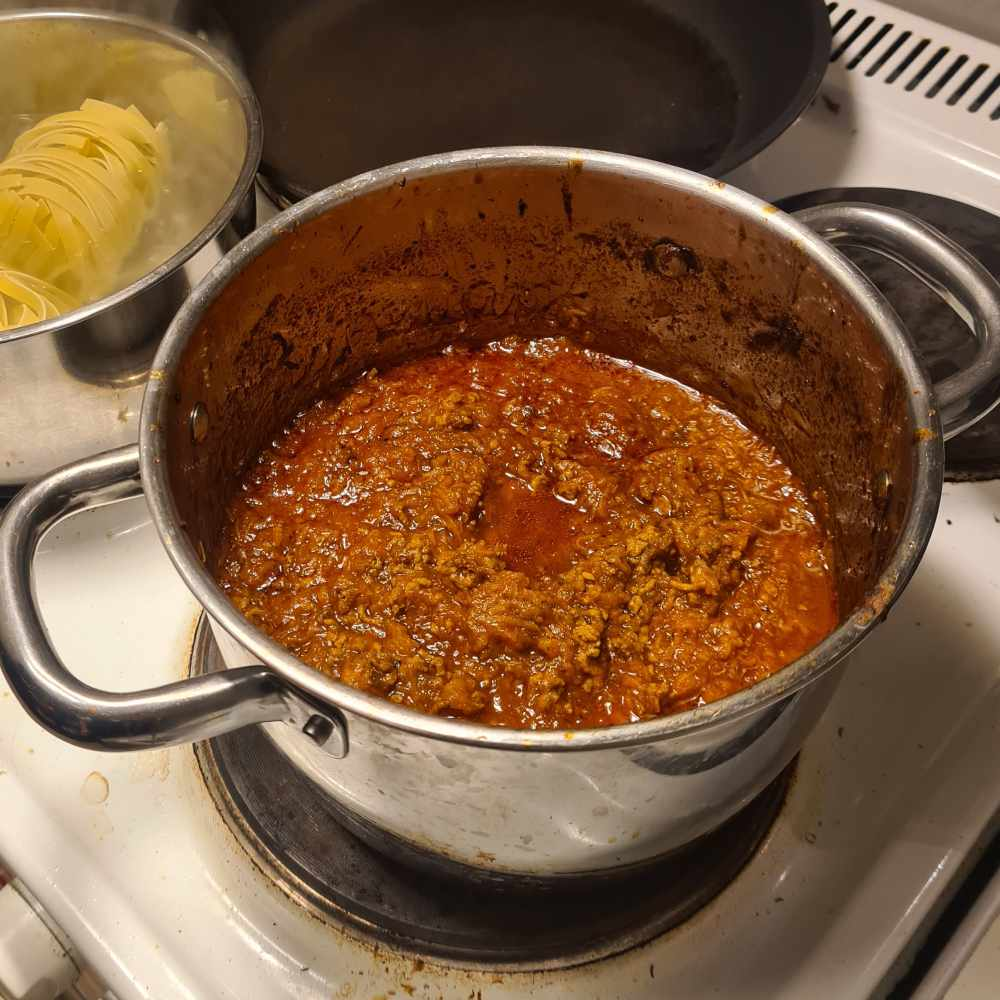

Ragu

Served with pasta or rice, approx 125g pasta per portion
Ingredients
- 500 g mince meat
- 1-2 carrots
- 1 big onion
- 2 cellery stalks
- 2-4 garlic cloves
- Thyme
- 1 Can passed tomatoes
- 1 beef buillion
Seasoned with knorr aromat or just regular salt
Directions
This can be made by either chopping or shredding the vegetables.
I like both, but usually I am shredding them.
- Start by frying the meat in the pan until they get color and render. Only
after that should you add aromat or salt.
- After that you should drain the fat from the meat in a strainer and let it
chill for a minute.
- Start frying the the vegetables in a pot with the thyme. Let it cook for a bit.
- Add the fried meat to the pot and season.
- Add the can of tomatoes and beef buillion to the pot and let cook for a bit.
Go back to cooking page
Go back to homepage